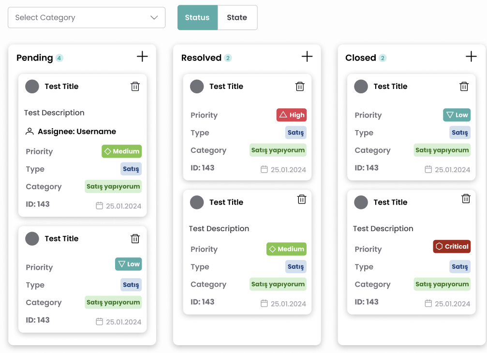

UI/UX Related Works
A collection of all my UI/UX related works.

Steam Interface Design
Steam is known for its vast library and engaged user base. However, users have voiced concerns over its confusing layouts and inconsistent design elements. This redesign aims to address these issues and create a more cohesive experience.

Exairon Operator Portal
Collaborated to improve usability and accessibility of the operator portal.